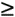

4.2 O-Notation
O -notation is the most
common notation used to express an algorithm's performance in
a formal manner. Formally, O
-notation expresses the upper bound of a function within a
constant factor. Specifically, if g (n)
is an upper bound of f (n), then for some constant c it is possible to find a value of
n, call it n0, for which any value of
n  n0 will
result in f (n)  cg (n). cg (n).
Normally we express an algorithm's
performance as a function of the size of the data it
processes. That is, for some data of size n, we describe its performance with
some function f (n). However, while in many cases we
can determine f exactly,
usually it is not necessary to be this precise. Primarily we
are interested only in the growth
rate of f, which
describes how quickly the algorithm's performance will degrade
as the size of the data it processes becomes arbitrarily
large. An algorithm's growth rate, or order of growth, is significant
because ultimately it describes how efficient the algorithm is for arbitrary inputs.
O -notation reflects an
algorithm's order of growth.
4.2.1 Simple Rules for O-Notation
When we look at some function f (n)
in terms of its growth rate, a few things become apparent.
First, we can ignore constant terms because as the value of
n becomes larger and larger,
eventually constant terms will become insignificant. For
example, if T (n) = n
+ 50 describes the running time of an algorithm, and
n, the size of the data it
processes, is only 1024, the constant term in this expression
already constitutes less than 5% of the running time. Second,
we can ignore constant multipliers of terms because they too
will become insignificant as the value of n increases. For example, if T1(n) =
n2 and T2(n) = 10n describe the running times of two
algorithms for solving the same problem, n only has to be greater than 10 for
T1 to become greater
than T2. Finally, we
need only consider the highest-order term because, again, as
n increases, higher-order terms
quickly outweigh the lower-order ones. For example, if T (n)
= n2 + n describes the running time of an
algorithm, and n is 1024, the
lesser-order term of this expression constitutes less than
0.1% of the running time. These ideas are formalized in the
following simple rules for expressing functions in O -notation.
-
Constant terms are expressed as O (1). When analyzing the running
time of an algorithm, apply this rule when you have a task
that you know will execute in a certain amount of time
regardless of the size of the data it processes. Formally
stated, for some constant c:
O(c) = O(1)
-
Multiplicative constants are omitted. When
analyzing the running time of an algorithm, apply this rule
when you have a number of tasks that all execute in the same
amount of time. For example, if three tasks each run in time
T (n) = n, the result is O (3n), which simplifies to O (n). Formally stated, for some
constant c:
O(cT) = cO(T) =
O(T)
-
Addition is performed by taking the
maximum. When analyzing the running time of an algorithm,
apply this rule when one task is executed after another. For
example, if T1(n) = n and T2(n) = n2 describe two tasks
executed sequentially, the result is O (n) + O (n2), which simplifies to
O (n2). Formally
stated:
O(T1)+O(T1+T2) = max (O(T1), O(T2))
-
Multiplication is not changed but often is
rewritten more compactly. When analyzing the running time of
an algorithm, apply this rule when one task causes another
to be executed some number of times for each iteration of
itself. For example, in a nested loop whose outer iterations
are described by T1 and whose inner
iterations by T2,
if T1(n) = n and T2(n) = n, the result is O (n)O
(n), or O (n2). Formally
stated:
O(T1)O(T2) = O(T1 T2)
4.2.2 O-Notation Example and Why It
Works
The next section discusses how these
rules help us in predicting an algorithm's performance. For
now, let's look at a specific example demonstrating why they
work so well in describing a function's growth rate. Suppose
we have an algorithm whose running time is described by the
function T (n) = 3n2 + 10n + 10. Using the rules of O -notation, this function can be
simplified to:
O(T(n)) =
O(3n2 + 10n + 10) = O(3n2) = O(n2)
This indicates that the term containing n2 will be the one that
accounts for most of the running time as n grows arbitrarily large. We can
verify this quantitatively by computing the percentage of the
overall running time that each term accounts for as n increases. For example, when n = 10, we have the following:
- Running time for 3n2:
3(10)2/(3(10)2 + 10(10) + 10) = 73.2%
- Running time for 10n:
10(10)/(3(10)2 + 10(10) + 10) = 24.4%
- Running time for 10: 10/(3(10)2 + 10(10) +
10) = 2.4%
Already we see that the n2 term accounts for the
majority of the overall running time. Now consider when n = 100:
- Running time for 3n2:
3(100)2/(3(100)2 + 10(100) + 10) =
96.7% (Higher)
- Running time for 10n:
10(100)/(3(100)2 + 10(100) + 10) = 3.2% (Lower)
- Running time for 10: 10/(3(100)2 + 10(100) +
10) < 0.1% (Lower)
Here we see that this term accounts for almost all of the running time, while
the significance of the other terms diminishes further.
Imagine how much of the running time this term would account
for if n were
106!
|